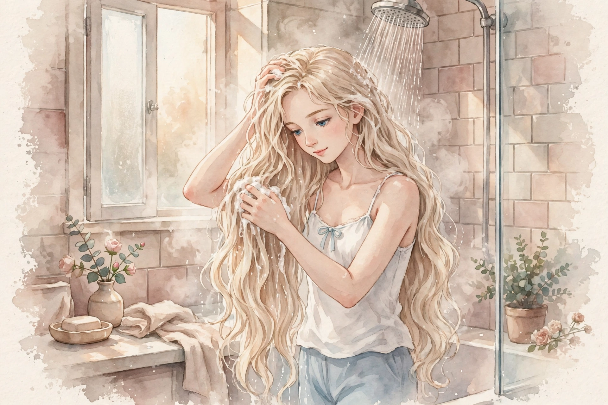

トップ ＞ ヘアケア ＞ 1日に2回洗う日の量と間隔の考え方
1日に2回洗う日の量と間隔の考え方

朝に洗って、夜も洗う。運動や仕事の都合で、1日に2回洗う日がある方もいます。施術の現場でも「2回洗ってもいいのか」という相談を受けます。この記事では、回数の是非ではなく、2回洗う日の量と間隔の考え方を整理します。
2回洗う日は「役割」を分ける
1日に2回洗う場合は、2回の役割を分けると考えやすくなります。朝は汗や寝ぐせを整えるための短い洗髪、夜はその日の汚れと整髪料を落とすための丁寧な洗髪、といった分け方です。役割が決まれば、量と時間の配分も自然に決まります。
朝の洗髪は、全体を濡らして短時間で済ませる方法もあります。シャンプーを使わず、水ですすぐだけの朝も選択肢のひとつです。自分の頭皮の感じ方と相談しながら、型を決めてください。
2回目は「量を減らす」が基本
夜の2回目の洗髪では、シャンプーの量をいつもより少なめから始めるのが基本です。1日にすでに1回洗っている分、汚れの量も限られます。泡の行き渡りを見ながら、足りなければ継ぎ足します。量の調整の考え方は、別記事「シャンプーの適量と泡立て方の目安」と共通します。
トリートメントも同様に、毛先中心の控えめな量から始めてください。2回洗う日が続く場合は、頭皮や髪の乾燥感がないか、感触を確かめる習慣をつけておくと安心です。乾燥感が気になる日は、洗い方を軽くするなど、その日の調整も大切です。
間隔は「生活のリズム」で決める
朝と夜の間隔は、生活のリズムに合わせて決めるものです。運動後の洗髪が加わって3回になる日もありますが、その場合は水ですすぐだけの回を挟むなど、負担の分散を考えます。詳しくは別記事「運動のあとの洗髪の段取り」も参考にしてください。
回数そのものより、1回ごとの量と丁寧さの配分が、頭皮と髪の状態を左右します。自分のリズムに合った配分を見つけることが、2回洗う日との付き合い方です。気になる状態が続く場合は、専門家への相談も検討してください。
2回洗う生活が続く場合は、使うシャンプーの量の総量も増えます。買い替えのペースが早くなるため、詰め替えの用意や、残量の確認のタイミングも見直しておくと安心です。棚の整理の記事で紹介した、残量の見える化は、こうした生活でも役立ちます。
頭皮の感触の記録も、2回洗う方にはおすすめです。洗った後の感触、翌朝の頭皮の感じを、スマートフォンのメモに一言残すだけでも、自分の適量と間隔の手がかりになります。記録がたまると、「この条件では1回で十分だった」といった、自分の規則が見えてきます。回数の正解は、記録の中から見つけるものです。
2回洗う日の設計では、朝の洗髪の乾かし方も重要です。朝は時間がないため、半乾きで出かけてしまうと、寝ぐせとは別の崩れ方をします。朝の洗髪を選ぶ場合は、乾かす時間まで含めて逆算してください。時間がない朝は、水ですすぐだけにして乾かす時間を短くするなど、洗い方と乾かし方はセットで調整するものです。また、家族と浴室を使う順番も、2回洗う生活では調整が要ります。使う時間帯を家族と共有しておくと、朝の混雑を避けられます。生活の設計まで含めて、2回洗う日の段取りです。
2回洗う日が週に何日あるかを把握しておくと、シャンプーの消費ペースも読めます。生活のパターンが見えると、買い物や詰め替えの計画も立てやすくなります。
2回洗う日の考え方は、家族の生活にも応用できます。子どもの外遊びの後の洗髪など、回数が増える場面では、役割分けと量の調整がそのまま使えます。家族で型を共有しておくと、段取りがそろいます。
役割分けの型は、一度決めれば考える手間が減り、毎日の洗髪が安定します。

セラフィナ「2回洗う日は役割分け。2回目は少なめから始めるのが基本だね」